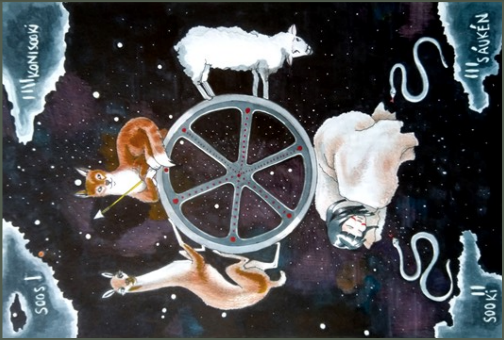

I can't say I like to draw, because it's my habit since I was child. I don't draw so much, because I currently don`t have time to do it. But for me is the main way to communicate. I'm developer, I'm compelled to work step by step in a discursive manner. But I know, and you know, and everyone knows that the world does not happen in a discursive manner, never. Maybe the world is nearer to an instant set of blurs, just like images and drawings. My emotional way of facing world, due to my childhood (I have no idea why, to be sincere), will always be "everything at the same time", so I draw to clarify the maps I need.
